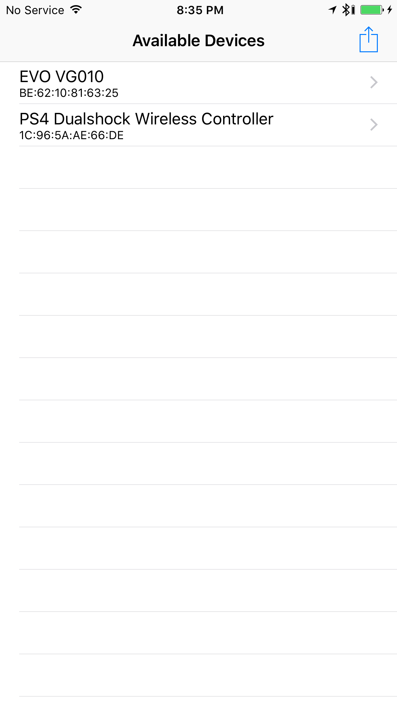
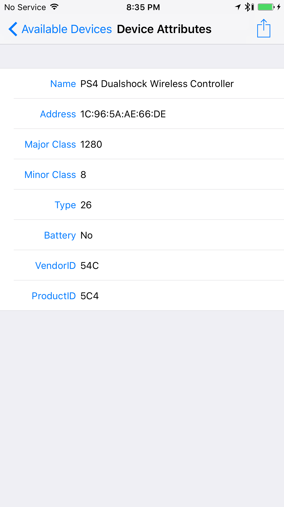
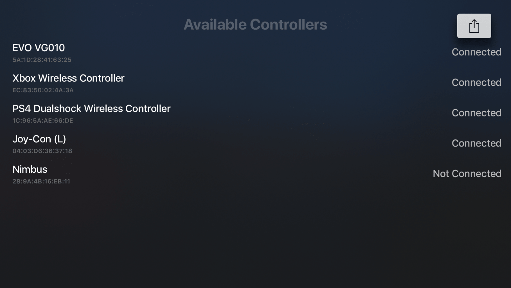
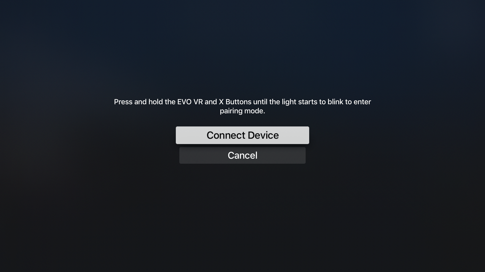

nControl
Would you like to hear about the single most useless thing Apple sells in the Apple Store? It’s not the HomePod. It’s not the base 21.5” iMac with a 1080p display, spinning hard drive and 3 generation old i5 for $1,099. It’s not even the “Waterproof” AirPods case, which is tantamount to putting your AirPods into an open condom. The sad truth is that the most useless thing you can buy at the Apple Store is, in fact, quite a good product, none other than the SteelSeries Nimbus. It’s a fantastic controller with great features like being comfortable to hold, lovely tactile buttons, and it takes the same charger as your iPhone/iPad (unless you own an iPad Pro 3rd gen, you absolute baller, you).
So why is it useless? Well, unless you live inside some weird bizarro land where people pray to a shrine of Steve Jobs every Sunday and Microsoft is the name you give to the dude who can’t get it up, you very likely own a gaming console, or a PC, and if you don’t, you probably don’t tend to do much gaming. So a games controller that doesn’t work with any conventional gaming setup, but only works with your Netflix box and your Facebook scroller makes almost no sense, especially since controller support is optional in every single game on iOS and tvOS anyway.
So this is where nControl comes in. Instead of buying a controller just for the Apple devices you own, why not use the great, functional controllers you already have lying around? Joy-Cons, Dualshock 4s, Xbox One controllers (Bluetooth models) and more are already supported, with more controllers planned to be supported in future releases, such as the Steam controller. So instead of spending $40 on the Nimbus, you can spend $10 on this tweak, and gain the benefit of using a controller you’re already familiar with, with a familiar button layout, trigger sensitivity and analogy stick location, along with easy pairing, and a simple, no-frills app, which is good, because the focus here is not the app, it’s the functionality.
 
Once you’ve sorted the pairing, the fun begins. For my personal use, I use my DualShock 4, and typically play the App Store GTA games or PS4 Remote Play on my iPad Pro 10.5”, jailbroken with Chimera. There is no noticeable latency, an especially big deal in a game like GTA where fast reflexes can be necessary for some of the hairier gunfights, the light bar works just fine, and the experience feels completely native. What’s more is that the disconnection/reconnection of the controller works far better here than it ever did on Controllers4All, and is an all-around pleasant experience.
Another good aspect is simply how well documented the tweak is. It has its own wiki page, with a detailed changelog, planned features and even a section dedicated to controllers the developers attempted to support but had no success with. No tweak I can think of has documentation this detailed and thorough, and succinctly answers so many frequently asked questions.
Planned features include Keyboard and Mouse support, which could evolve this into far more than it started out as, support for mapping controller functions to screen presses for apps with no MFi controller support and even better support for Moonlight, the Steam streaming app. Yet another ace in the hole for this tweak is the tvOS version. I’ve not had personal use with it, but the gaming prowess of the A10X tells me it’s likely an even better experience.
 
nControl is available for iOS on the Packix repo for $9.99, and the tvOS version is available via the Patreon linked in the product’s wiki page.
Disclaimer: nControl was purchased outright by me, for personal gaming use. This tweak was chosen to be highlighted by me, and the screenshots were provided to me by the developers either directly or via the repo listing. This editorial was produced prior to the announcement of iOS 13 and with it, native support for the DualShock 4 and Xbox One S Wireless Controller.
Have any questions? Feel free to mention me (Aaron.#0023) on the Sileo discord or reach out to me on Twitter @23Aaron_.